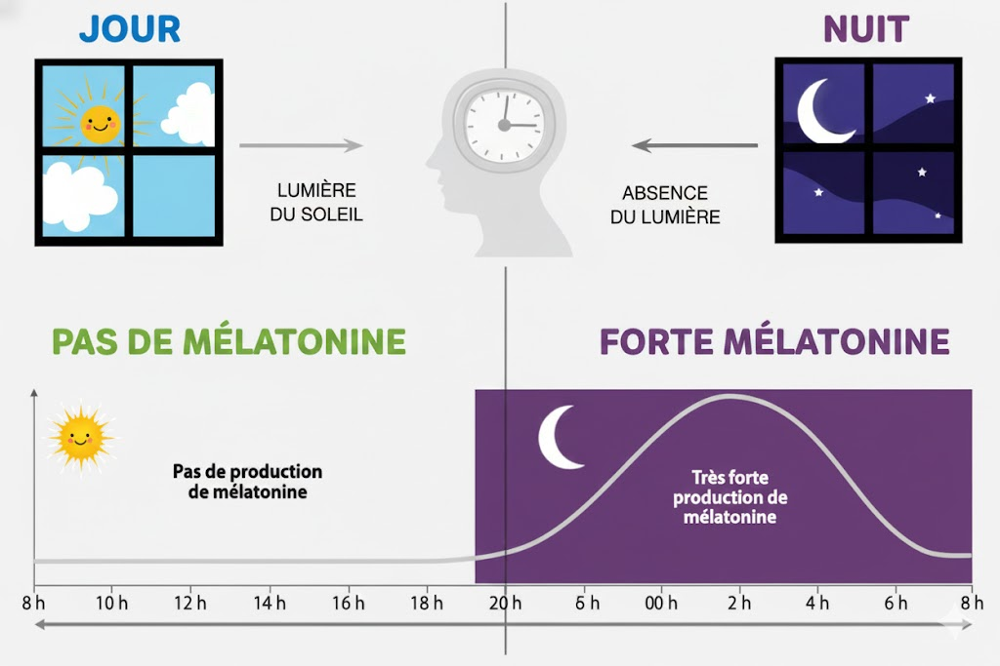

MODULE A2: Le sommeil, un rythme biologique
Séance 2 : Comment notre corps fonctionne-t-il ?
🎯 Objectifs Simples
- **Je découvre** ce qu'est un rythme biologique.
- **J'identifie** ce qui nous aide à dormir ou à rester éveillé.
Compétences CAP : C1, C3 - Comprendre le fonctionnement de base du corps.
🔴 ÉTAPE 1 : Découvrir les Rythmes
Document A : Le rythme Veille / Sommeil (Texte)
Un exemple de rythme biologique : l'alternance veille / sommeil.
Un rythme biologique, c'est quelque chose que le corps **répète chaque jour**.
Le sommeil est un rythme biologique. Le corps fonctionne sur un **cycle d'environ 24 heures**.
On appelle cela un **rythme circadien**.
La **lumière du jour** aide le corps à rester éveillé.
L'absence de lumière aide le corps à dormir.
La nuit, le corps fabrique une hormone du sommeil appelée **mélatonine**.
Cette hormone aide à s'endormir.
Document B : Cycle Jour/Nuit et Mélatonine (Schéma)
🟡 ÉTAPE 2 : Répondre par Clic
3.1 Définir un rythme biologique (Clic unique)
Dans le Document A, clique sur le mot ou l'expression qui définit un rythme biologique (ce que notre corps fait tout le temps) :
3.2 Indiquer la durée du rythme et son nom (Clics multiples)
Clique sur les **DEUX** bonnes réponses (une durée et un nom) :
🟢 ÉTAPE 3 : La Mélatonine
3.3 Citer le facteur extérieur (Clic unique)
Qu'est-ce qui fait commencer la production de l'hormone du sommeil (mélatonine) ? (Regarde le Document A)
3.5 Préciser l'heure de début (Clic sur l'heure)
À quelle heure la mélatonine commence-t-elle à monter fortement, d'après le graphique (Document B) ?
Très bien ! Tu as terminé la Séance 2.
N'oublie pas d'enregistrer ta page.